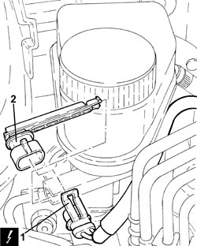
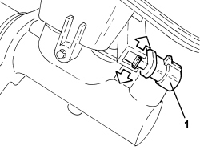

3330C44 BRAKE FLUID MINIMUM W/L SWITCH - R + R
- Path
- Procedures > 33 BRAKES > 3330 HYDRAULIC BRAKE SYSTEM > 3330C BRAKE PUMP, RESERVOIR AND LOAD PROPORTIONING VALVE > 3330C44 BRAKE FLUID MINIMUM W/L SWITCH - R + R
- Kind
- repair procedure (removal / refitting; the operation number is the code)
- Applies to
- all engines; all production periods
- Interactive page
- https://sloeber94.github.io/elrnDB-fCrm/en/#/194000490
Applies to: all engines; all production periods
 Removing
Removing
 Refitting
Refitting- Make sure that the ignition key is in the OFF position, then disconnect the battery terminal (-).
Description | Connector | |
|---|---|---|
- | Battery |
1. Disconnect the electrical connection from the brake fluid minimum level warning light switch.
Description | Connector | |
|---|---|---|
1 | Brake fluid level sensor (switch) |
2. Adjust the clip and remove the minimum brake fluid level warning light switch.

Applies to: all engines; all production periods
Refitting
Removing- Place the minimum brake fluid level warning light switch in its housing.
- Connect the electrical connection to the brake fluid minimum level warning light switch.
- Connect the negative battery terminal.
Applies to: engines: 2.2, 1.9 JTD 16v, 2.4 JTD 20v; all production periods
Removing
Refitting- Position the vehicle on a lift.
- Make sure that the ignition key is in the OFF position, then disconnect the battery terminal (-).
Op. 7055B54 UNDER ENGINE PROTECTION/GUARD - R.R.
Op. 3330C12 MASTER CYLINDER (PUMP) - R.R. FOR RIGHT HAND DRIVE VERSIONS
1. Expand the fastening tabs, then release the minimum brake fluid warning light switch and remove it.

Applies to: engines: 2.2, 1.9 JTD 16v, 2.4 JTD 20v; all production periods
Refitting
Removing- Place the minimum brake fluid warning light switch back in its housing until the fastening tabs are attached.
Op. 3330C12 MASTER CYLINDER (PUMP) - R.R. FOR RIGHT HAND DRIVE VERSIONS
Op. 0010T64 BRAKE AND/OR CLUTCH FLUID CHECK LEVEL AND TOP UP AS NECESSARY
Op. 0010T65 HYDRAULIC BRAKE SYSTEM - BLEED AIR
Op. 7055B54 UNDER ENGINE PROTECTION/GUARD - R.R.
- Connect the negative battery terminal.
- Remove the vehicle from the lift.